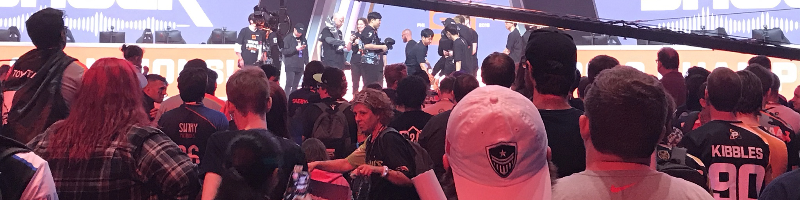
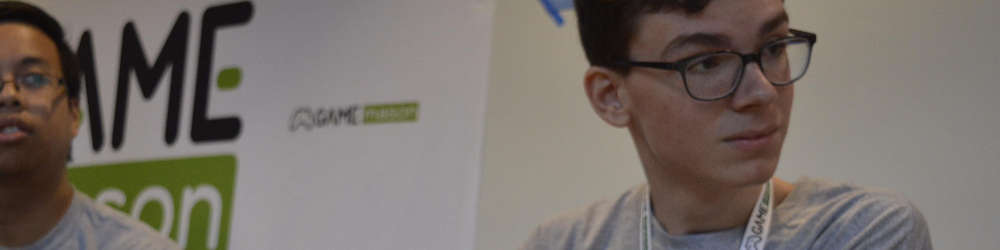
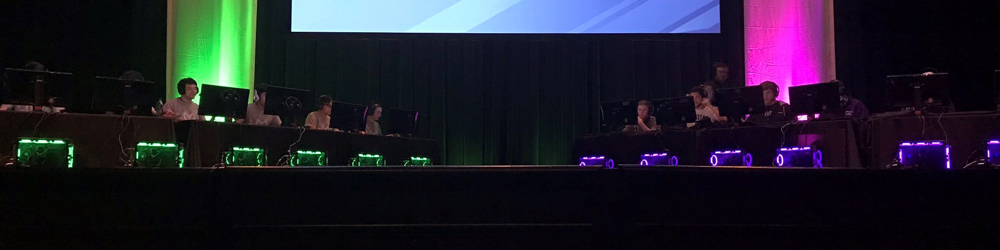

Throughout academia and beyond, I have cultivated team-based organizational and planning skills that are necessary to lead and teach a group, applying this expertise when needed.
Here are a few of my more recent and significant positions working as both a follower and a leader in the field of local esports.

Starting in the 2018-2019 academic year, I began my role as Social Media Manager for GMU Overwatch, planning and enacting the team’s online presence across various social media platforms, mainly focusing on Twitter, YouTube, and Instagram. This included utilizing my skills as a graphic designer to create visual graphics with a coherent aesthetic across platforms in order to instill team familiarity with online audiences. Additionally, I helped curate, and in some cases create, short-form and long-form video content with our team editors, including gameplay montages, interviews, and meme content.
I also designed and created the branding and visual graphics for the Virginia Community Overwatch Invitational (VCOI), an in-state tournament between VA colleges and universities hosted by GMU Overwatch.

An additional role within the GMU Overwatch team I took on was that of Outreach Manager, creating connections and networking between the team and outside organizations, schools, and individuals. I helped both GMU Overwatch and Esports partner and participate in events with Washington Vice & Virtue, Washington Justice, and Team Liquid. In preparation for VCOI, I coordinated the participation of other Virginia schools, as well as secure casters for the tournament.

Starting in 2018, Student Involvement at George Mason University set out, with the help of various student groups, to create GAMEmason, an on-campus event that would engage students by covering various fields relating to gaming - ranging from esports to game development, and everything in between. On the planning committee for this event, I served as both a participant and liaison between the committee and GMU Overwatch, helping to coordinate the in-person LAN finals of the Virginia Community Overwatch Invitational tournament that would serve as the capstone to GAMEmason’s event day lineup.
The event, which took place on April 5th, 2019, also included celebrity appearances from David Hayter and John Romero, a public game floor, a Mason Smash crew battle, and other attractions. GAMEmason 2019 surpassed attendance expectations by over double the amount of attendees, making the event a resounding success and putting a spotlight on GMU Esports.